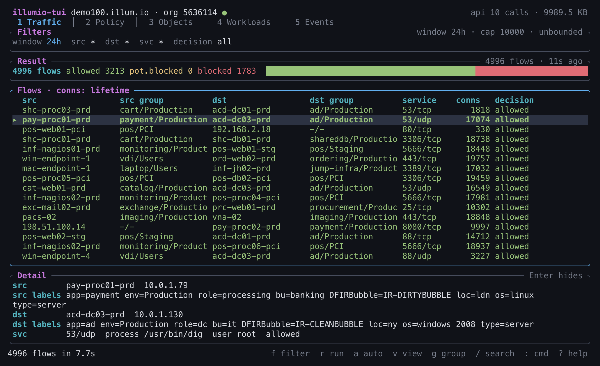
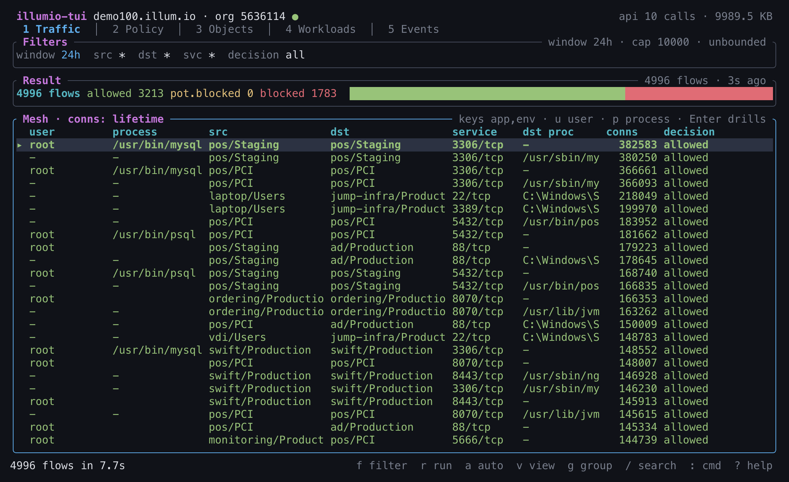
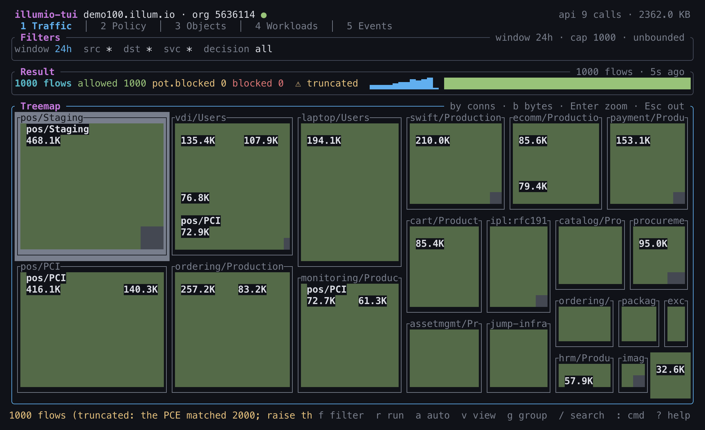
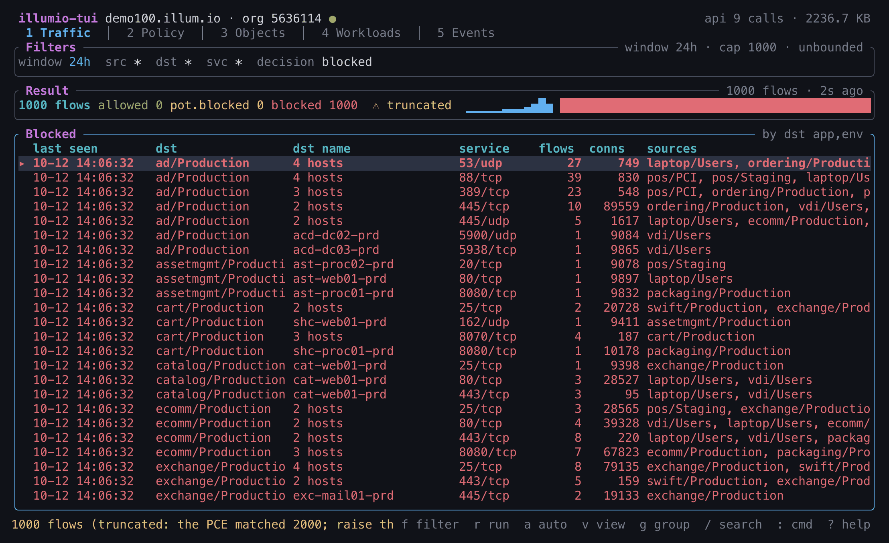
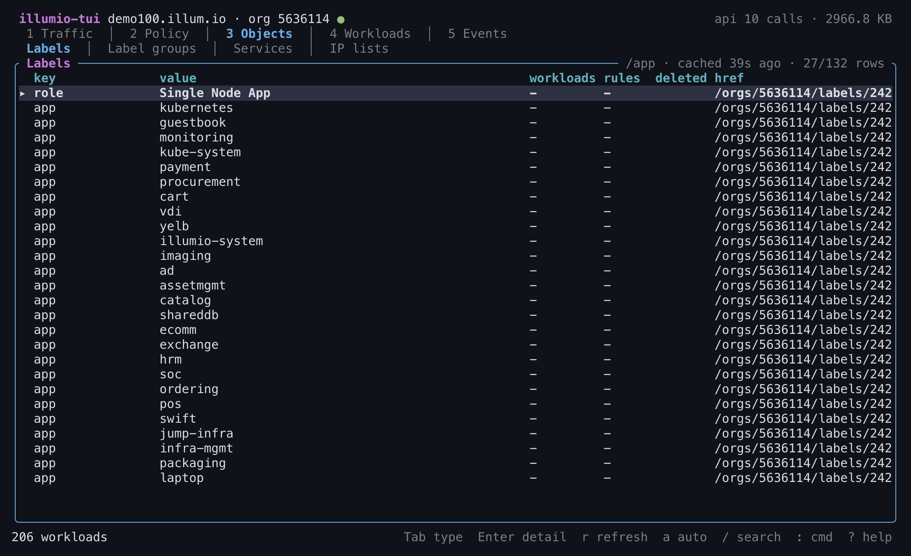
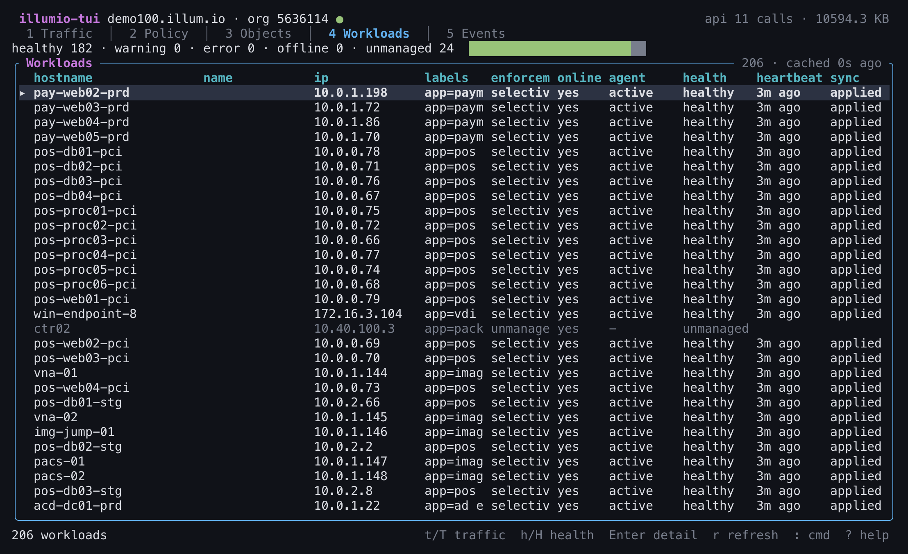
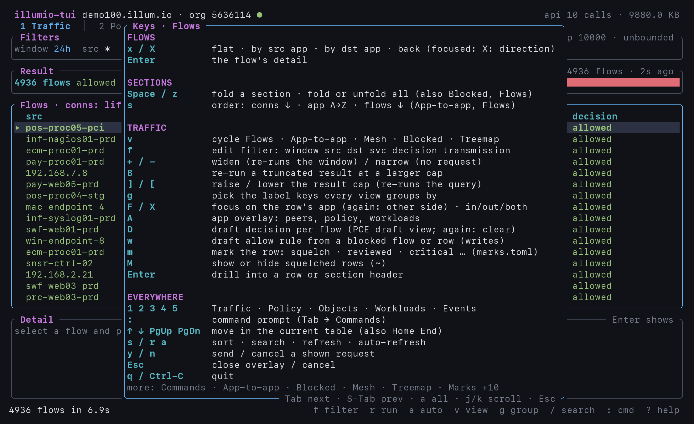
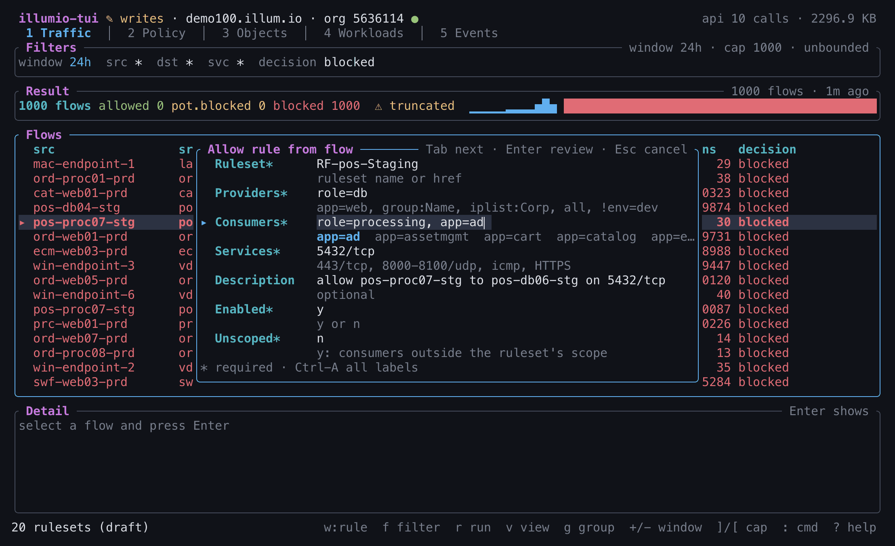
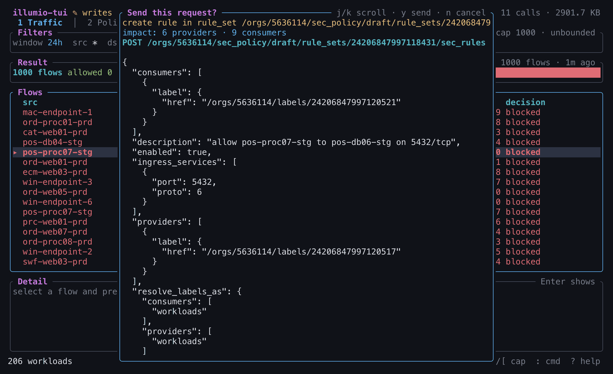

The Illumio PCE at terminal speed.
Traffic, policy, labels, IP lists, workloads and events in a btop-style terminal UI and a scriptable CLI. Every request is one you caused, every one is counted, and writes happen only when you arm them.
- release
- v0.1.11
- platforms
- macOS · Linux · Windows
- screens
- 5
- writes
- opt-in
- licence
- GPL-3.0-only
1Install
One binary. Download it, check it, put it on your PATH.
Every GitHub Release carries one archive per platform and a SHA256SUMS file. The current release is v0.1.11.
| Platform | Archive |
|---|---|
| macOS Apple Silicon | illumio-tui-0.1.11-aarch64-apple-darwin.tar.gz |
| macOS Intel | illumio-tui-0.1.11-x86_64-apple-darwin.tar.gz |
| Linux x86_64 (glibc) | illumio-tui-0.1.11-x86_64-unknown-linux-gnu.tar.gz |
| Linux x86_64 (static musl, any distro) | illumio-tui-0.1.11-x86_64-unknown-linux-musl.tar.gz |
| Linux arm64 | illumio-tui-0.1.11-aarch64-unknown-linux-gnu.tar.gz |
| Windows x86_64 | illumio-tui-0.1.11-x86_64-pc-windows-msvc.zip |
Example for macOS on Apple Silicon; swap the target for yours:
$ curl -LO https://github.com/alexgoller/illumio-tui/releases/download/v0.1.11/illumio-tui-0.1.11-aarch64-apple-darwin.tar.gz
$ curl -LO https://github.com/alexgoller/illumio-tui/releases/download/v0.1.11/SHA256SUMS
$ shasum -a 256 -c --ignore-missing SHA256SUMS # Linux: sha256sum --check --ignore-missing SHA256SUMS
$ tar -xzf illumio-tui-0.1.11-aarch64-apple-darwin.tar.gz
$ install -m 755 illumio-tui-0.1.11-aarch64-apple-darwin/illumio-tui ~/.local/bin/
$ illumio-tui --version
illumio-tui 0.1.11macOS may quarantine a binary downloaded with a browser; clear it with xattr -d com.apple.quarantine ~/.local/bin/illumio-tui. On Windows, compare Get-FileHash of the zip with its line in SHA256SUMS, extract it, and move illumio-tui.exe into a folder on your PATH.
From source
With Rust 1.88 or newer:
$ git clone https://github.com/alexgoller/illumio-tui
$ cd illumio-tui
$ cargo install --path crates/illumio-tuiThen point it at your PCE (see Configure) and run illumio-tui for the terminal UI, or illumio-tui health to check the connection from the CLI.
2The terminal UI
Explorer, policy and inventory on five keyboard-driven screens, in the spirit of btop.
Run illumio-tui with no subcommand and it opens on your default profile (--profile prod for another, --theme light for the light palette). Boxed panels with titled borders, dense stats, decision colours, and the API call and byte counters in the header at all times.
r query, v through the five views, the g key picker, Enter on a flow, then Objects and Workloads. GIF version.




f set the decision to blocked: blocked flows by destination group and service, with their sources.
/app search.

Five screens
- 1Traffic. One filter (
f), one query (r), five views of the result onv./searches,ssorts; a filter that would be expensive asks first. - 2Policy. Rulesets and their rules in evaluation order (override deny, allow, deny), draft and active on
d, pending changes onp,ifor the workloads each rule matches. - 3Objects. Four tabs: labels, label groups, services and IP lists.
ukeeps the labels nothing holds, by the PCE’s own usage flags in one request, and names what holds the others: pairing profiles and permissions count as much as workloads and rules. Each IP list shows its size in addresses with exclusions taken out, its ranges and FQDNs, and the draft rules that use it. - 4Workloads. VEN health columns and a summary line,
hunhealthy only,Hby severity,t/Tjump to Traffic with the workload as source / destination. A workload without a VEN shows enforcementunmanaged, as in the PCE UI, whatever mode the API reports for it (oftenvisibility_only). Local filters, no request:Eenforcement,mmanaged,ooffline,uunlabeled (amissingcolumn names the absent scope or role keys),cclears them andh(not the search); a filter line shows what is on and the count. - 5Events. Severity-coloured audit events, filtered by severity, type and window;
Entershows the event as JSON.
The : prompt takes :traffic, :policy, :objects, :workloads, :events, :iplists, :filter, :window, :profile <name>, :writes on|off, :draft, :active, :help and :q. ? shows the full key map.
Five views of one traffic result
All five group flows by the same label keys: your profile's scope keys (app,env by default) until g opens the key picker, which also offers all labels.
- Flows: each side's group and, on
Enter, both label sets and the bytes. - App-to-app: group pairs with allowed, potentially blocked and blocked counts;
osplits each pair by port/proto (one row per allow rule to write);Enterdrills into a pair's flows. - Mesh: user, process, source, destination, service and destination process;
u/phide the user / process column and merge rows. - Blocked: blocked and potentially blocked flows by destination group and service.
- Treemap: each source a box, its destinations tiles sized by connections (
bfor bytes) and coloured by decision;hjklmove,Enterzooms and drills.
Switching views, grouping, sorting and searching send nothing to the PCE. With writes armed, w turns a blocked flow into a draft allow rule; once it is written, the flows on screen are re-evaluated against the draft (one PUT per query, like D), unless a query is running or D would ask first (a cached result, a large window or cap).
F focuses every view on one app: X cycles its inbound, outbound or both directions, Esc clears it. On a truncated result, r re-queries just that app, with its labels in the query.
D shows what the draft policy would decide for each flow, next to the reported decision: blocked → allowed in Flows, would allow counts in App-to-app, a fixed by draft step on d, and draft: N blocked flows fixed in the app screen. It is the PCE’s own Explorer draft view and changes no policy: one PUT on the query you already ran, polls and one download, no new query. D again clears it with no request; Esc cancels it while it runs. On the CLI, --draft.
A opens one screen for that app: inbound and outbound peers, its workloads with enforcement modes (workloads without a VEN counted as unmanaged) and VEN health, and the rulesets that cover it. It reuses what is loaded; opening it sends at most two requests, and every request is counted in its header.
3The CLI
The same library, scriptable: JSON for agents, tables for humans.
Output is a table at a terminal and JSON when stdout is piped; force either with --table or --json. --csv prints the full table as CSV for spreadsheets, and :export <path> does the same from the TUI.
# connectivity, objects, workloads, events
$ illumio-tui health
$ illumio-tui labels --key app
$ illumio-tui labels --unused --json # by the PCE's usage flags
$ illumio-tui iplists --table
$ illumio-tui workloads --label app=web --online true
$ illumio-tui workloads --unlabeled --json # no app, env or role label
$ illumio-tui events --since 1h --severity err
# policy, draft by default, every href resolved to a name
$ illumio-tui policy rulesets
$ illumio-tui policy rules "Web-DB" --impact --json
$ illumio-tui policy pending
# Explorer traffic: flows, app-to-app, blocked, label groups, the mesh
$ illumio-tui traffic query --window 24h --src app=web --dst app=db --json
$ illumio-tui traffic query --window 1h --group app,env
$ illumio-tui traffic query --window 1h --blocked
$ illumio-tui traffic groups --window 1h --keys app,env,role
$ illumio-tui traffic mesh --window 1h --no-user --json
$ illumio-tui traffic query --window 30d --dry-run
# connection profiles
$ illumio-tui profile list
$ illumio-tui profile use prodExplorer, without the clicking
traffic query submits the PCE's asynchronous Explorer query, polls with backoff, downloads the result, flags truncation, and resolves every label href to key=value.
Filters read like you think: app=web, ip:10.0.0.5, ipl:NAME, wl:HOST, fqdn:NAME. A comma means AND, repeating the flag means OR. Add --exclude-src, --exclude-dst, --port, --proto, --process and --decision as needed. An unknown label value fails locally, before the PCE sees anything.
--group app,env folds flows into label pairs; --blocked keeps blocked and potentially blocked flows, grouped by destination group and port. traffic groups prints one row per source and destination group with connections, bytes and decisions (--services: one per group pair and port/proto); traffic mesh one row per user, process, source, destination, service and destination process, with --no-user and --no-process to merge. --keys picks the label keys (default: the profile's scope keys). --app shop/prod --direction in spends the cap on one app: its labels go into the query (two queries for both, merged). flows counts flow records; conns and bytes are the lifetime counts of those records, as in the PCE UI, and JSON and CSV add them per decision (allowed_conns, pot_blocked_conns, blocked_conns, unknown_conns). --transmission unicast (or broadcast, multicast; :unicast in the TUI) leaves out the other kinds in the query itself; the default keeps every kind, where workloader counts unicast only.
illumio-tui app shop/prod prints the same profile as one JSON envelope for agents: workloads and VENs, peers and policy; --table and --csv --section print it per section.
--impact on policy rules counts the workloads each rule matches as providers and consumers, across the ruleset's scopes, label groups and exclusions, from one cached workload read; iplists gives every list its size.
Built for agents
Every command prints one envelope on stdout: your data, plus a meta block that says what it cost.
$ illumio-tui traffic query \
--window 1h --group app,env --json
{
"data": [ ... ],
"meta": {
"profile": "prod",
"elapsed_ms": 4120,
"api_calls": 8,
"bytes": 412733,
"cache": "miss",
"truncated": false,
"window": {
"start": "2026-10-10T11:00:00Z",
"end": "2026-10-10T12:00:00Z"
},
"covered": "1h",
"cap": 10000,
"incomplete": false
}
}Envelope shape with illustrative values. cache is one of hit, miss, bypass or none; a write adds meta.write.
Errors go to stderr as JSON, so a pipeline never mistakes a failure for data:
{"error":{"exit_code":2,"kind":"args","message":"expensive query: window is 30d (> 7d); re-run with --yes to confirm"}}- 1
- generic failure
- 2
- arguments or configuration
- 3
- authentication
- 4
- PCE error
- 5
- rate limited
- 6
- write refused by the guard
4Writes, on purpose
Off unless the profile says yes. Planned, shown, confirmed, audited.
illumio-tui writes labels, IP lists, services, unmanaged workloads, and policy: rulesets, allow and deny rules, provisioning, and the labels of VEN-managed workloads. None of it happens by accident:
- The profile gates it. Without
writes = true(orILLUMIO_WRITES=1) every write is refused with exit code 6, even a dry run. - The CLI needs
--yes.--dry-runprints the exact method, path and JSON body and sends nothing; with neither flag nothing is sent. Nothing is ever retried. - The TUI starts with writes off.
:writes onarms them for the session, the header shows✎ writes, andn/e/xcreate, edit and delete. The confirm overlay shows the summary,METHOD pathand the whole body beforeysends it once. - Pending changes are diffed. On Policy,
plists what waits for provisioning;Entershows a draft IP list, service or ruleset against active, andPprovisions the marked entries after showing the exactchange_subset. - Every sent write is audited to
~/.local/state/illumio-tui/writes.jsonl(mode 0600) with the body sent and the status received. - Updates send only what changes, and carry untouched list entries through exactly as the PCE returned them.
:writes on, w drafts an allow rule from a blocked flow, Ctrl-N completes labels, services and values in the rule and label forms, and the recording ends at the confirm with n: nothing was sent. GIF version.

Ctrl-N cycling label values.
POST path and the whole body before anything is sent.$ illumio-tui labels add app=web --yes
$ illumio-tui iplists update Corp --add-range 10.2.0.0/16 --dry-run
$ illumio-tui policy rules add Web-Tier --provider app=web --consumer iplist:Corp --service 443/tcp --dry-run --impact
$ illumio-tui policy provision --all --dry-runRules use a compact token grammar: app=web, group:NAME, iplist:NAME, workload:HOST, all, and ! to exclude. --impact on a rule write reports the workloads it will touch before anything is sent. The README has the full reference.
5Configure
Environment variables or a profile file; flags override both for one run.
Environment variables
The connection uses the same names as illumio-mcp-server, so an existing setup just works:
PCE_HOST=pce.example
PCE_PORT=443
PCE_ORG_ID=1
API_KEY=api_xxxxxxxxxxxx
API_SECRET=xxxxxxxxxxxxxxxx| Variable | Effect |
|---|---|
PCE_TLS_VERIFY | false skips certificate checks, like --insecure |
ILLUMIO_PROFILE | the profile to use, like --profile |
ILLUMIO_WRITES | 1 allows writes, like writes = true |
ILLUMIO_SCOPE_KEYS | the label keys a ruleset scope is made of |
ILLUMIO_TIER_KEY | the label key a rule selects a tier by |
ILLUMIO_IGNORE_KEYS | label keys hidden from label columns |
ILLUMIO_TUI_THEME | dark (default) or light |
--env-file .env loads a dotenv file for one run. Per-run flags: --host, --pce-port, --org-id, --profile, --config, --insecure, --no-cache. The connection port flag is --pce-port because traffic query has its own --port filter.
Profiles
In ~/.config/illumio-tui/config.toml:
default_profile = "prod"
[profiles.prod]
host = "pce.example"
org_id = 1
api_key = "api_..."
api_secret_cmd = "op read op://vault/pce/secret"
writes = true # optional: allow writes
[profiles.prod.labels]
scope_keys = ["app", "env"]
tier_key = "role"
ignore_keys = ["DFIRBubble"]api_secret_cmd fetches the secret from your password manager at run time; keep it non-interactive, because :profile runs it while the TUI owns the terminal. Switch profiles with profile use, --profile or :profile.
The label model
Rulesets are scoped by scope_keys (app, env by default) and rules select tiers by tier_key (role). The traffic views, traffic groups, traffic mesh and traffic query --blocked group by the scope keys, and the w rule form pre-fills from both. Labels print in scope-key order, then the tier key, then alphabetically.
ignore_keys hides housekeeping keys from label columns and the g picker; JSON output, the workload edit form and the Labels tab keep them, and a scope or tier key is never ignored.
6Gentle on the PCE, by construction
Your PCE is shared, expensive and important. This tool treats it that way.
Most tools that hammer a management plane do it by accident: a refresh loop nobody asked for, a retry storm, an Explorer query over ninety days that someone fired off to see what happens. illumio-tui is built so that none of that can happen quietly. Every request is caused by you, throttled, cached where it can be, counted, and shown back to you.
- 2 req/s, burst 5One token bucket shared by every request. 429 and 503 pause the whole client with exponential backoff and jitter, honouring
Retry-After. POSTs are never retried. - Counted, alwaysEvery call and byte goes into
meta.api_callsandmeta.bytes, and into the TUI header. You always know what you spent. - Cached 15 / 5 minLabels, label groups, IP lists and services for 15 minutes; policy and workloads for 5. One traffic result is kept until the filter changes.
- 5 requests to startThe TUI opens with health plus the four object lists. The first visit to Workloads and to Events costs one request each; going back costs none.
- No auto-refresh by default
aturns it on per screen, never faster than every 60 seconds, with a countdown; it switches itself off after a failed refresh. - 24 h, 10 000 rowsExplorer queries default to a 24-hour window and a 10 000-row cap, at most 200 000. Truncation comes from the PCE's own row count and is always reported;
Band--backfillre-run the window at a larger cap, one query per rung, asking above 10 000. - Draft view on request
Dand--draftask the PCE to re-evaluate your own query against draft policy: one PUT on that query resource, polls and one download per query, cached. It changes no policy, so it needs no armed writes; it is never sent without the key, the flag, or a successful write of yours: that re-evaluates the draft decisions on screen (or awrule's flows) once, visibly, withEscon Traffic to cancel, and only whereDwould run without asking. A draft answer a write overtook is never cached. --yesabove 7 days or 10 000 rowsExpensive queries stop with exit code 2 and tell you why, until you confirm on purpose.--dry-runPrints the exact Explorer request body and sends nothing. See the query before the PCE does.
7Roadmap
Ideas for what comes next are collected in the idea backlog, issue #5. Among them:
- Explain a flow: which rule allowed or blocked it, in the TUI and as
traffic explain. - Enable or disable rules and rulesets; change a workload's enforcement mode.
- Drill from a rule's impact into the workloads it covers; an app-to-app matrix with CSV export.
- Search across policy.
- Saved filters per profile; event filters and VEN health; a
schemacommand for agents.
What it leaves to others: workloader is the established batch tool for the PCE, and the two work side by side. illumio-tui is for interactive analysis, rule drafting and agents; for bulk import and export, automated labelling, VEN lifecycle, rule and port usage reports and running across many PCEs, use workloader.
Suggestions and bug reports are welcome in the issue tracker.
Licence and links
illumio-tui is free software under the GNU General Public License v3.0 only. It is an independent project and is not an official Illumio product.
The design was written up as a spec and approved before any code existed; each implementation plan was then carried out task by task, every task independently reviewed before the next one started. AI coding agents in Claude Code did the implementation and review work, under the owner's direction.
- illumio-tui on GitHub: source, issues and the README, the full reference.
- Architecture notes: how the library, CLI and TUI fit together.
- Design spec and implementation plans: how it was made.
- illumio-mcp-server: the same PCE, exposed to AI assistants over the Model Context Protocol, by the same author.